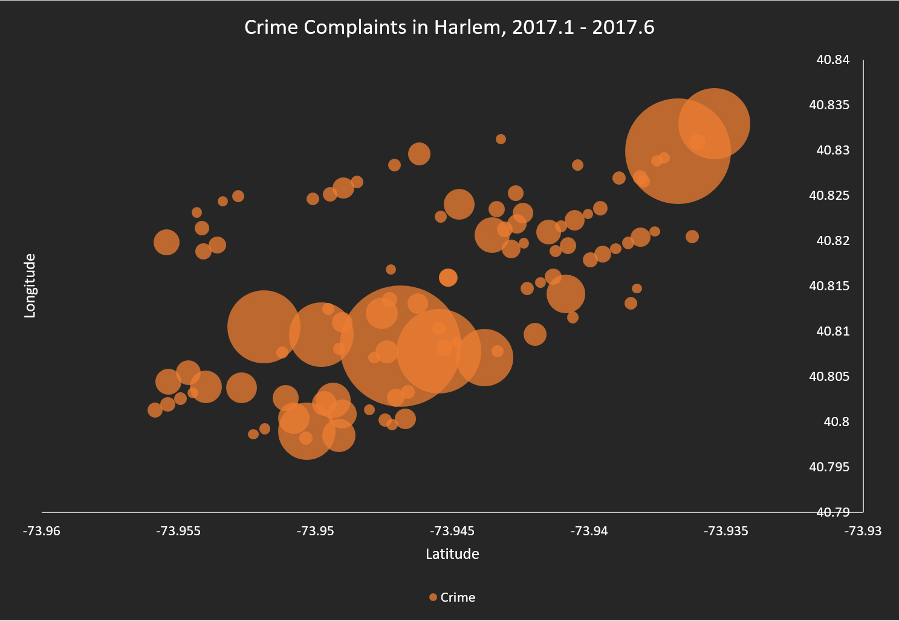
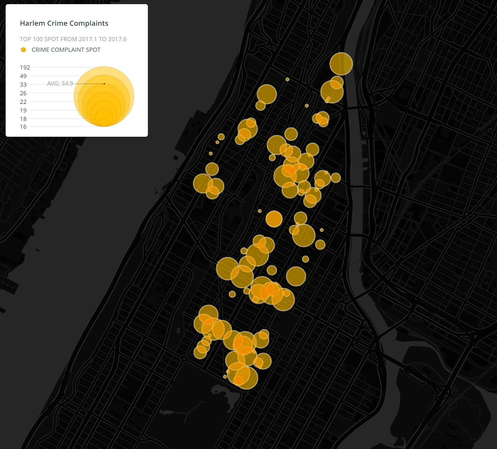
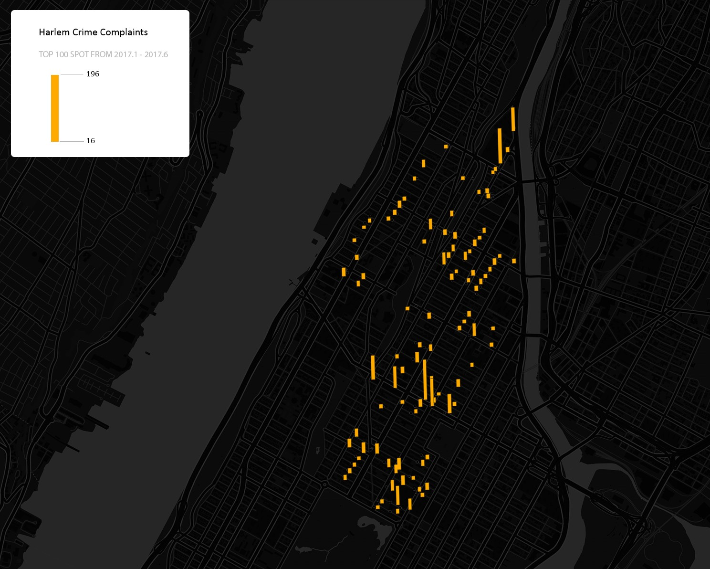

Story
How can we find the location of crime? This is a visualization of crime complaints in Harlem neighborhood, Manhattan. Through these figures, people can find where the crime complaints are reported and have a glimpse of the area with high crime rate. Considering the size of data set, I used the data in from January to June in 2017 and selected top 100 spots with highest crime complaints for analysis and visualization. The neighborhood includes No. 28, 30, 32 Precinct.
Misrepresentation
Figure 1 use a bubble chart to simply visualize the number of complaints. X and Y axis are longitude and latitude respectively. The diameter of the buble represent complaints number. We can find crime complaints are concentrated at which longtitude and latitude. However, the bubble chart should use area as calculation otherwise it will be misled visually. And the bubbles are overlapped with each other and could not provide a direct feeling of the loaction, which makes it hard to read.
Then, I try to display it through Carto, an online map tool (https://carto.com/). The circles in Figure 2 represent 100 spots located by longitude and latitude. The radius of circle is the classified number of complaints happened at that spot in the selected time period. The larger the circle, the higher the crime complaints. However, although the map looks clear with diverse transparent circles, the size of circle may be misleading. It makes people feel as if the whole area covered by the circle has high crime rate, just like a buffer.
To make that clear, I made Figure 3 and change the circles to rectangles. Now the height of rectangles directly shows the classified number of complaints at each specific location. We can also figure out the density through the distribution of spots with tall rectangles. It seems much more reasonable right now. But another problem is these spots only represent the place where people make the crime complaints rather than where the actual crime happened. The dense rectangles may also indicate that those area is highly policed and have many devices along the streets for people to call for crime complaints.
.............................Figure 1. Bubble Chart...................................................Figure 2. Bubble Map.....................................................Figure 3. Bar Map...............................
  
Discussion
All the figures provide specific location and the number of crime complaints at that location, which accords with the original intention of the map. The rectangle one is more accurate than the circle one, but the scale and the original data has some disadvantages to display where the exact crime happened in both figures. Thinking of mapping crime spot more accurately, maybe we can use GIS tools, or just enlarge the mapping area, for example calculating the crime in precinct scale.
Data Source: 2017 NYPD Complaint Map (Year to Date). Derived from NYC OpenData.